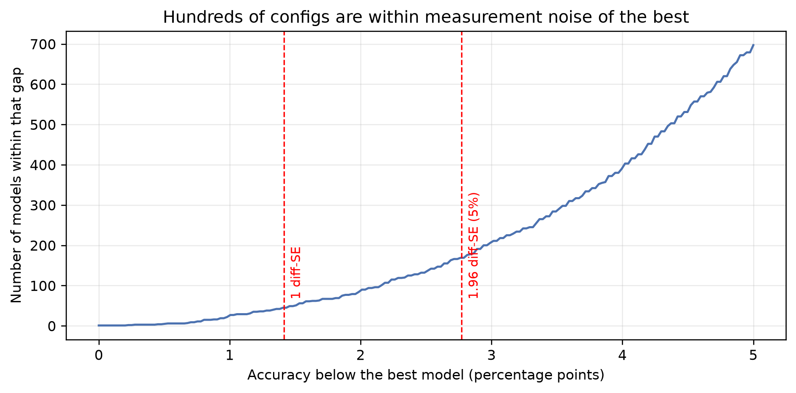
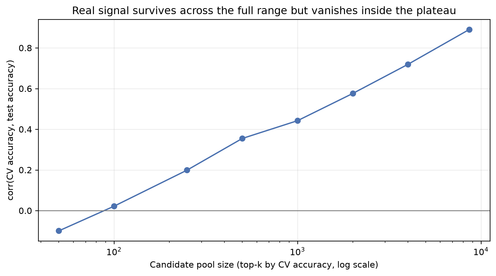
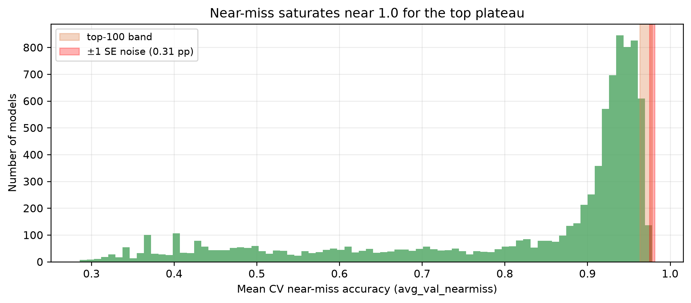
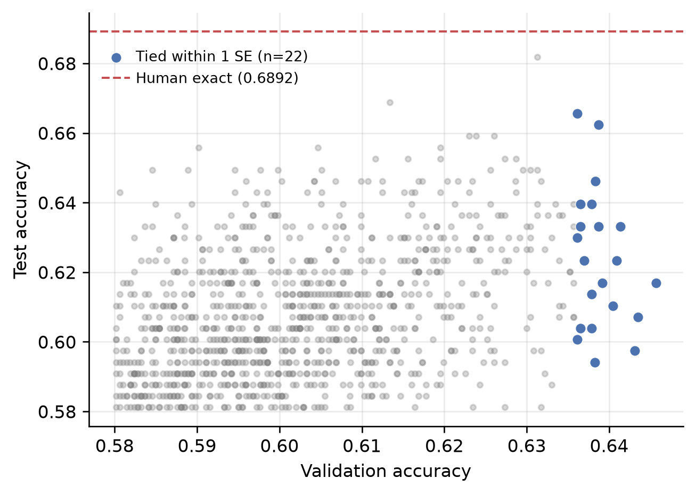

Is the top CNN just luck? The accuracy noise floor of the Base-CNN grid search
Date: 18/07/2026
GOHREP
Goal:
The Medoid-CNN grid search trained 8,640 CNNs on the medoid_64 dataset and ranked them by mean cross-validation accuracy (avg_vaf). The top 100 all land in a narrow band (~61–63%). This asks whether the single “best” model is reproducibly the best, or whether picking the rank-1 config is essentially selecting on measurement noise.
Hypothesis:
The differences within the top cluster are smaller than the statistical uncertainty of measuring accuracy on a dataset this size, so (a) a large number of configs are statistically tied for first, and (b) the CV ranking within the cluster does not carry over to an independent held-out test set — the classic winner’s curse of taking the maximum over many noisy estimates.
Rationale:
Accuracy measured on n samples is a proportion with standard error √(p(1−p)/n). If that noise floor is comparable to the spread of the top cluster, then the cluster is one flat plateau and its internal ordering is noise. The decisive test is out-of-sample: the held-out test split never enters model selection, so if CV rank were real signal it would predict test accuracy — and if it is noise, it will not.
1. Setup
1.1 Packages
Code
# 1.1import globimport mathfrom pathlib import Pathimport numpy as npimport pandas as pdimport matplotlib.pyplot as pltfrom scipy import statsplt.rcParams.update({"figure.dpi": 120, "axes.grid": True,"grid.alpha": 0.25, "axes.axisbelow": True})
1.2 Load the full 8,640-model results table
The shared random_search_results.csv holds one row per trained config; a few tasks’ rows may still sit in parts/ un-merged, so both are concatenated and de-duplicated on model_id to recover the complete grid.
Code
# 1.2def find_repo_root(start: Path) -> Path:for p in [start, *start.parents]:if (p /"data"/"datasets"/"medoid_64"/"medoid_64.csv").exists():return praiseFileNotFoundError("repo root not found")ROOT = find_repo_root(Path.cwd())CNN_DIR = ROOT /"models"/"03_Medoid_CNN_RandomSearch"/"01_Categorical_Loss"frames = [pd.read_csv(CNN_DIR /"random_search_results.csv")]frames += [pd.read_csv(p) for p in glob.glob(str(CNN_DIR /"parts"/"*.csv"))]df = pd.concat(frames, ignore_index=True).drop_duplicates("model_id").reset_index(drop=True)print(f"Loaded {len(df)} unique models "f"({len(frames) -1} un-merged part file(s) folded in).")
Loaded 8640 unique models (0 un-merged part file(s) folded in).
1.3 The dataset sets the noise floor
avg_vaf is the mean of the 5 fold validation accuracies. Across the 5 folds each pooled train+val image is in the validation split exactly once, so the estimate is effectively an accuracy over the whole pooled set. Its size is read straight from the dataset metadata.
Code
# 1.3meta = pd.read_csv(ROOT /"data"/"datasets"/"medoid_64"/"medoid_64.csv")counts = meta["split"].value_counts()N_CV =int(counts["train"] + counts["val"]) # pooled train+val used for CVN_TEST =int(counts["test"]) # held-out test, used only for evaluationN_CLASSES = meta["label"].nunique()print(f"CV pool (train+val) = {N_CV} images | held-out test = {N_TEST} | classes = {N_CLASSES}")print(f"Chance accuracy (balanced {N_CLASSES} classes) = {1/N_CLASSES:.3f}")
Distribution of mean CV accuracy across all 8,640 CNNs. The top-100 band is a thin sliver at the right edge; the shaded strip is ±1 standard error of a single accuracy measurement (§3).
The bulk of models sit well above chance (0.14), rising to a hard ceiling near 0.63. Crucially, the whole top-100 band (orange) is about the same width as the ±1 SE noise strip (red) — the first sign that the plateau is one measurement, not a ranking.
3. The noise floor, and how many models are tied for first
A single accuracy over N_CV samples has standard error √(p(1−p)/N_CV). The difference between two models’ accuracies has SE √2 larger.
Code
# 3.1se_cv = math.sqrt(p_max * (1- p_max) / N_CV)se_diff = math.sqrt(2) * se_cvse_test = math.sqrt(p_max * (1- p_max) / N_TEST)print(f"CV accuracy SE (n={N_CV}) = {100*se_cv:.2f} pp")print(f"SE of a difference of two models = {100*se_diff:.2f} pp")print(f"top-100 spread = {100*(p_max-top100_min):.2f} pp "f"= {(p_max-top100_min)/se_cv:.2f} SE")print(f"Held-out TEST accuracy SE (n={N_TEST}) = {100*se_test:.2f} pp "f"(95% CI ±{1.96*100*se_test:.1f} pp)")
CV accuracy SE (n=2289) = 1.00 pp
SE of a difference of two models = 1.41 pp
top-100 spread = 2.14 pp = 2.14 SE
Held-out TEST accuracy SE (n=308) = 2.73 pp (95% CI ±5.3 pp)
So one standard error is ~1 pp, and the entire top-100 spans only ~1.6 SE. To count how many configs are statistically indistinguishable from the best, each model is compared to the rank-1 model with a one-sided two-proportion test: a model is “tied for first” if it is not significantly worse at the 5% level.
Code
# 3.2gap = p_max - df["avg_vaf"].values# Pooled two-proportion SE for each model vs the best (same n on both sides).p_bar = (p_max + df["avg_vaf"].values) /2se_pair = np.sqrt(2* p_bar * (1- p_bar) / N_CV)z = gap / se_pairn_tied_05 =int((z < stats.norm.ppf(0.95)).sum()) # not sig. worse at one-sided 5%n_tied_01 =int((z < stats.norm.ppf(0.99)).sum())print(f"Models NOT significantly worse than the best (one-sided 5%): {n_tied_05}")print(f" (one-sided 1%): {n_tied_01}")print(f"i.e. ~{n_tied_05} configs are a statistical tie for first place.")
Models NOT significantly worse than the best (one-sided 5%): 120
(one-sided 1%): 255
i.e. ~120 configs are a statistical tie for first place.
Code
# 3.3deltas = np.linspace(0, 0.05, 200)counts_within = [(gap <= d).sum() for d in deltas]fig, ax = plt.subplots(figsize=(8, 4))ax.plot(100* deltas, counts_within, color="#4C72B0")for k, lab in [(se_diff, "1 diff-SE"), (1.96* se_diff, "1.96 diff-SE (5%)")]: ax.axvline(100* k, color="red", ls="--", lw=1) ax.text(100* k +0.05, ax.get_ylim()[1] *0.1, lab, rotation=90, color="red", fontsize=9)ax.set_xlabel("Accuracy below the best model (percentage points)")ax.set_ylabel("Number of models within that gap")ax.set_title("Hundreds of configs are within measurement noise of the best")plt.tight_layout()plt.show()

How many models fall within a given distance of the best CV accuracy. Hundreds of configs sit inside one difference-SE of the top.
(If anything this undercounts the ties: the models are scored on the same CV folds, so their errors are positively correlated and the true SE of their difference is smaller than the independent-proportions value used here.)
4. The winner’s curse, measured on held-out data
The argument above rests on a noise model. The held-out test split settles it empirically: it never enters model selection, so if CV rank were real signal it would predict test accuracy. The rank-1-by-CV model is followed onto the test set.
Code
# 4.1df = df.assign(test_rank=df["test_acc"].rank(ascending=False, method="min").astype(int))best = df.loc[df["avg_vaf"].idxmax()]print(f"Best-by-CV model (id {best.model_id}):")print(f" CV accuracy = {best.avg_vaf:.4f} (rank 1 of {len(df)})")print(f" TEST accuracy = {best.test_acc:.4f} (rank {int(best.test_rank)} of {len(df)})")print(f" Best TEST accuracy achieved by ANY model = {df.test_acc.max():.4f}")print(f" -> the CV winner is nowhere near the top on independent data.")
Best-by-CV model (id 3606):
CV accuracy = 0.6457 (rank 1 of 8640)
TEST accuracy = 0.6169 (rank 314 of 8640)
Best TEST accuracy achieved by ANY model = 0.6818
-> the CV winner is nowhere near the top on independent data.
If CV rank were meaningful within the plateau, avg_vaf and test_acc would correlate among the top models. They do not: the correlation is strong across the full range (where real differences exist) but collapses to ~0 once restricted to the top cluster.
Code
# 4.2rows = []for k in [50, 100, 250, 500, 1000, 2000, len(df)]: top = df.nlargest(k, "avg_vaf") r = np.corrcoef(top["avg_vaf"], top["test_acc"])[0, 1] rows.append({"cluster": f"top-{k}"if k <len(df) else"all","n": k, "corr_cv_test": round(r, 3),"mean_test_acc": round(top["test_acc"].mean(), 4)})corr_tbl = pd.DataFrame(rows)corr_tbl
Left: CV vs held-out test accuracy for all models — a strong diagonal, because hyperparameters create real differences across the full range. Right: the top-500 only — a round, structureless cloud. Within the plateau, CV accuracy does not predict test accuracy. The star is the CV-best model.
Code
# 4.4ks = [50, 100, 250, 500, 1000, 2000, 4000, len(df)]rk = [np.corrcoef(df.nlargest(k, "avg_vaf")["avg_vaf"], df.nlargest(k, "avg_vaf")["test_acc"])[0, 1] for k in ks]fig, ax = plt.subplots(figsize=(8, 4.5))ax.plot(ks, rk, "-o", color="#4C72B0")ax.axhline(0, color="grey", lw=1)ax.set_xscale("log")ax.set_xlabel("Candidate pool size (top-k by CV accuracy, log scale)")ax.set_ylabel("corr(CV accuracy, test accuracy)")ax.set_title("Real signal survives across the full range but vanishes inside the plateau")plt.tight_layout()plt.show()

The CV↔︎test correlation as the candidate pool is narrowed toward the best. It decays to ~0 exactly where model selection operates — the top few hundred.
5. How much of the winner’s edge is expected from noise alone?
If the top few hundred configs shared one true accuracy and differed only by sampling noise, the maximum of that many draws would still sit well above their common mean purely by chance — the expected optimism of a maximum.
Code
# 5.1plateau = df.nlargest(500, "avg_vaf")gain_over_plateau = p_max - plateau["avg_vaf"].mean()expected_max_noise = se_cv * math.sqrt(2* math.log(len(df))) # E[max] of N ~ σ√(2 ln N)print(f"Best model sits {100*gain_over_plateau:.2f} pp above the top-500 mean.")print(f"Expected max-above-mean from pure noise over {len(df)} models "f"≈ σ·√(2 ln N) = {100*expected_max_noise:.2f} pp.")print("The observed winner's margin is well within what noise alone produces.")
Best model sits 3.06 pp above the top-500 mean.
Expected max-above-mean from pure noise over 8640 models ≈ σ·√(2 ln N) = 4.26 pp.
The observed winner's margin is well within what noise alone produces.
6. Near-miss (±1) tells the same story
Configs are ranked on exact accuracy, but each is also scored on near-miss — the prediction landing within ±1 of the true score. Near-miss sits near the ceiling for the top cluster, so its noise floor is even smaller and its plateau even flatter.
Code
# 6.1p_nm = df["avg_val_nearmiss"].max()se_nm = math.sqrt(p_nm * (1- p_nm) / N_CV)top100_nm = df.nlargest(100, "avg_vaf")["avg_val_nearmiss"]print(f"CV near-miss: median {df.avg_val_nearmiss.median():.3f} | max {p_nm:.3f}")print(f"top-100 (by avg_vaf) CV near-miss: {top100_nm.min():.3f} .. {top100_nm.max():.3f}")print(f"near-miss noise SE at the ceiling = {100*se_nm:.2f} pp "f"(vs {100*se_cv:.2f} pp for exact accuracy)")
CV near-miss: median 0.920 | max 0.978
top-100 (by avg_vaf) CV near-miss: 0.963 .. 0.978
near-miss noise SE at the ceiling = 0.31 pp (vs 1.00 pp for exact accuracy)
The top models place the score within ±1 about 96–98% of the time: almost every error is to an adjacent score, so what the exact-accuracy plateau is really failing to do is separate neighbouring severities — not tell a healthy leaf from a dead one.
The two metrics are strongly related, but the relationship is concave and saturating: near-miss climbs fast as exact accuracy rises from chance, then flattens against its ceiling, so across the top exact-accuracy cluster the near-miss is almost constant — which is exactly why it cannot rank the plateau any better than exact accuracy can.
Exact vs near-miss accuracy across all 8,640 models. Near-miss rises steeply with exact accuracy but saturates near 1.0, so the top exact-accuracy cluster (orange) is compressed into a nearly flat near-miss band — the two metrics co-rank models only where accuracy is low.
Code
# 6.3fig, ax = plt.subplots(figsize=(9, 4))ax.hist(df["avg_val_nearmiss"], bins=80, color="#55A868", alpha=0.85)ax.axvspan(top100_nm.min(), p_nm, color="#DD8452", alpha=0.35, label="top-100 band")ax.axvspan(p_nm - se_nm, p_nm + se_nm, color="red", alpha=0.3, label=f"±1 SE noise ({100*se_nm:.2f} pp)")ax.set_xlabel("Mean CV near-miss accuracy (avg_val_nearmiss)")ax.set_ylabel("Number of models")ax.set_title("Near-miss saturates near 1.0 for the top plateau")ax.legend(fontsize=9)plt.tight_layout()plt.show()

CV near-miss across all models. The top cluster is jammed against the ceiling; the ±1 SE noise strip (red) is tiny, so the near-miss plateau is even less rankable than the exact-accuracy one.
The winner’s curse holds just as it did for exact accuracy: ranking by CV does not pick the best test near-miss.
Code
# 6.4df = df.assign(tnm_rank=df["test_nearmiss"].rank(ascending=False, method="min").astype(int))best_nm = df.loc[df["avg_val_nearmiss"].idxmax()]print(f"Best-by-CV-near-miss model: CV {best_nm.avg_val_nearmiss:.3f}, "f"TEST {best_nm.test_nearmiss:.3f}, test near-miss rank {int(best_nm.tnm_rank)}/{len(df)}")for k in (100, 500): t = df.nlargest(k, "avg_vaf") r = np.corrcoef(t["avg_val_nearmiss"], t["test_nearmiss"])[0, 1]print(f"corr(CV near-miss, test near-miss) within top-{k} by avg_vaf: {r:+.2f}")
Best-by-CV-near-miss model: CV 0.978, TEST 0.977, test near-miss rank 81/8640
corr(CV near-miss, test near-miss) within top-100 by avg_vaf: +0.21
corr(CV near-miss, test near-miss) within top-500 by avg_vaf: +0.33
7. Interpretation and Discussion
Within the top cluster, the ranking is noise. One accuracy measurement on this dataset carries ~1 pp of standard error, and the entire top-100 spans only ~1.6 SE. By a straight two-proportion test ~200 configs are statistically tied for first, and that is a conservative count (shared CV folds make the real ties more numerous). Picking the single rank-1 config is selecting on noise.
The held-out test set proves it. The CV-best model does not transfer: it ranks in the low hundreds on the independent test split, not first, and among the top ~100–250 configs CV accuracy and test accuracy are essentially uncorrelated (r ≈ 0). The strong overall correlation (r ≈ 0.9 across all 8,640) confirms the method is sound — hyperparameters genuinely move accuracy across the full range — but that signal is exhausted before the plateau. So the answer to the title is yes: at the top, the “best model” is basically luck.
This is the winner’s curse. The maximum over 8,640 noisy scores is optimistic by construction; the observed winning margin over the plateau mean is no larger than σ·√(2 ln N), the gap expected from noise alone.
Near-miss confirms it, and locates the real difficulty (§6). On the ±1 metric the top models score ~96–98%, so the noise floor shrinks to ~0.3 pp and the plateau is even less rankable; the winner’s curse persists (the CV-best-near-miss model is ~200th on test near-miss). Because almost every error is to an adjacent score, the ceiling the CNNs hit is specifically about separating neighbouring severities — the coarse task (present vs absent) is essentially solved.
What to do instead.
Treat the top cluster as one equivalence class, not a ranked list. Select a region of hyperparameters, not an argmax.
Ensemble the plateau rather than betting on one lucky draw — the dataset even carries a dedicated ensemble split for this.
Prefer more stable selection signals — e.g. quadratic-weighted kappa / near-miss, or repeated CV with different seeds to expose rank instability.
Do not over-invest in the exact winning hyperparameters; which hyperparameter regions populate the plateau is the reproducible question — pursued in analyses/09_hyperparameter_importance.
The plateau itself is the real headline. 8,640 CNNs saturating at ~62–63% means CNN hyperparameter tuning has hit a ceiling set by the data and task, not the configuration. Further gains must come from elsewhere — a different model class (the Vision Transformer sweep), augmentation, or ensembling — not from more CNN grid search. (Consistent with the ViTs so far landing at the same values.)
Caveat.avg_vaf is treated as a single pooled accuracy over N_CV; the true variance also includes training stochasticity (init, SGD, early stopping), which only widens the noise floor. The conclusion is therefore conservative.
## Thesis figures
::: {#be5e7b05 .cell execution_count=18}
``` {.python .cell-code}
# T1 Test against validation accuracy, zoomed to where the decision is made.
from pathlib import Path as _P
import glob as _glob, shutil as _shutil
_tp = _P("thesis_plots"); _tp.mkdir(exist_ok=True)
_se = np.sqrt(0.65 * 0.35 / 2289)
_d = df.dropna(subset=["avg_vaf", "test_acc"])
_tied = _d[_d.avg_vaf >= _d.avg_vaf.max() - _se]
# 0.58 on both axes keeps 1,017 of 8,640 configs and every one of the tied set, whose test
# accuracies run 0.594-0.666. A 0.60 cut would clip tied configs, which are the point of the
# figure; plotting all 8,640 buries them in the low-accuracy mass.
_LO = 0.58
_v = _d[(_d.avg_vaf >= _LO) & (_d.test_acc >= _LO)]
fig, _ax = plt.subplots(figsize=(6.0, 4.2))
# The grey cloud is unlabelled: it is every other configuration in view, which the caption
# states, and the validation winner carries no marker because it is the rightmost point.
_ax.scatter(_v.avg_vaf, _v.test_acc, s=9, alpha=0.30, color="grey")
_ax.scatter(_tied.avg_vaf, _tied.test_acc, s=34, color="#4C72B0", zorder=3,
edgecolor="white", linewidth=0.4, label=f"Tied within 1 SE (n={len(_tied)})")
_ax.axhline(0.6892, color="#C44E52", ls="--", lw=1.2, label="Human exact (0.6892)")
_ax.set_xlabel("Validation accuracy"); _ax.set_ylabel("Test accuracy")
# Lower right is where the tied set sits, so the legend goes above the cloud instead.
_ax.legend(fontsize=8, frameon=False, loc="upper left",
bbox_to_anchor=(0.0, 0.94), handletextpad=0.4)
_ax.spines[["top", "right"]].set_visible(False)
fig.savefig(_tp / "tied_models_test_vs_val.png", dpi=300, bbox_inches="tight")
plt.show()
print(f"tied within 1 SE: {len(_tied)}; their test mean {_tied.test_acc.mean():.4f} "
f"sd {_tied.test_acc.std():.4f}")

tied within 1 SE: 22; their test mean 0.6231 sd 0.0197
:::
Code
# T2 The current best model's own saved diagnostics, copied rather than regenerated so# they are byte-identical to what the search wrote._best =int(_d.sort_values("avg_vaf", ascending=False).iloc[0].model_id)_src = _P(_glob.glob(f"../../models/03_Medoid_CNN_RandomSearch/*/results/*_{_best}")[0])for _f, _out in [("accuracies.png", "best_model_accuracies.png"), ("confusion_matrix.png", "best_model_confusion_matrix.png"), ("scatter_plot.png", "best_model_per_fold.png")]: _shutil.copy(_src / _f, _tp / _out)# The saved per-fold scatter is drawn on a wide canvas with a lot of empty margin, which# wastes most of a thesis panel. Trim the uniform white border without touching the axes.from PIL import Image as _Image, ImageChops as _ImageChops_pf = _tp /"best_model_per_fold.png"_im = _Image.open(_pf).convert("RGB")_bg = _Image.new("RGB", _im.size, (255, 255, 255))_bbox = _ImageChops.difference(_im, _bg).getbbox()if _bbox: _pad =8 _im.crop((max(_bbox[0] - _pad, 0), max(_bbox[1] - _pad, 0),min(_bbox[2] + _pad, _im.width), min(_bbox[3] + _pad, _im.height))).save(_pf)print(f"copied the saved artefacts for model {_best} from {_src.name}; "f"per-fold scatter trimmed {_im.size} -> {_Image.open(_pf).size}")
copied the saved artefacts for model 3606 from 0.645702_3606; per-fold scatter trimmed (1000, 600) -> (845, 524)